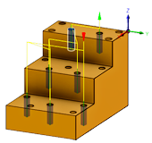

When Unchecked
First hole is at the highest Z.
When Checked
First hole is at the lowest Z.
For holes with multiple Z start heights.
Changes the order from the highest to lowest, or lowest to highest. Unchecked, the order will start with the holes at the highest Z level and progressively move down. Check to reverse the order.
|
 |
When Unchecked |
When Checked |